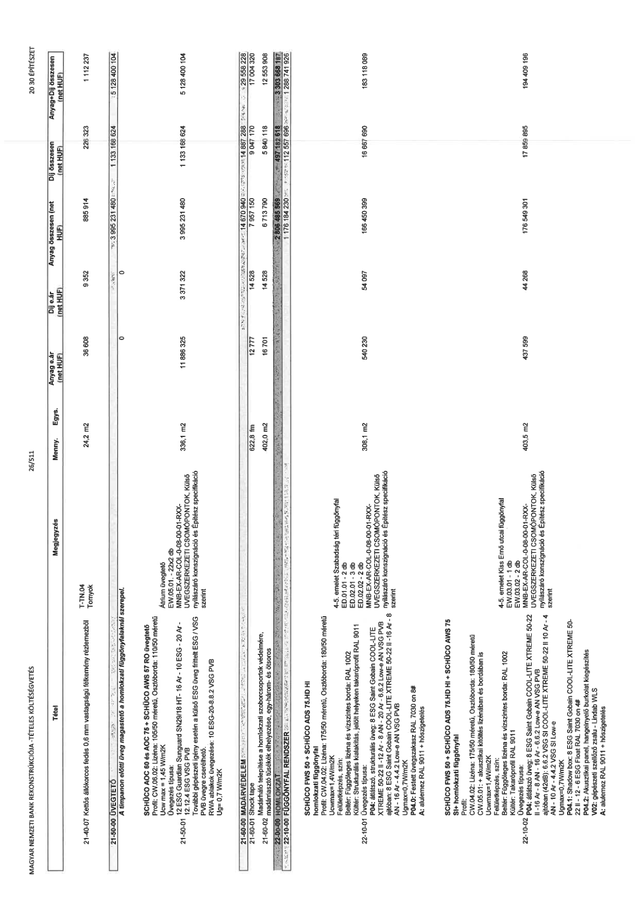

| Tétel | Megjegyzés | Menny. | Egys. | Anyag e.ár (net HUF) | Díj e.ár (net HUF) | Anyag összesen (net HUF) | Díj összesen (net HUF) | Anyag+Díj összesen (net HUF) |
|---|---|---|---|---|---|---|---|---|
| 21-40-07 | Kettős állókorcos fedés 0,6 mm vastagságú félkemény rézlemezből; T-TN.04 Tornyok | 24,2 | m2 | 36 608 | 9 352 | 885 914 | 226 323 | 1 112 237 |
| 21-50-00 ÜVEGTETŐ | A timpanon sötét üveg magastető a homlokzati függönyfalaknál szerepel. | NaN | NaN | 0 | 0 | 0 | 0 | 0 |
| 21-50-00 ÜVEGTETŐ | Szakági összesítő | NaN | NaN | 0 | 0 | 3 995 231 480 | 1 133 168 624 | 5 128 400 104 |
| SCHÜCO AOC 75 + SCHÜCO AWS 57 RO üvegtető Profil: CW: 06.02; Lüzena: 105/50 méretű; Osztóborda: 110/50 méretű; Ucw max = 1,45 W/m2K; Üvegezés típusa: SunGuard SN29/18 HT; 16 Ar - 10 ESG - 20 Ar - 12.12.4 ESG VSG PVB; További gépészeti igény esetén a külső ESG üveg fűtött ESG / VSG PVB üvegre cserélhető; Külső üveglap megnevezése: 10 ESG-20-8.8.2 VSG PVB; Ug = 0,7 W/m2K | Átrium üvegtető; EW.05.01 - 22x2 db; EW.05.02 - 12x2 db; ÜVEGSZERKEZETI CSOMÓPONTOK; Kültér nyílászáró konszignáció és Építész specifikáció szerint | 336,1 | m2 | 11 886 325 | 3 371 322 | 3 995 231 480 | 1 133 168 624 | 5 128 400 104 |
| 21-60-00 MADÁRVÉDELEM | Szakági összesítő | NaN | NaN | 0 | 0 | 14 670 940 | 14 887 288 | 29 558 228 |
| 21-60-01 | Shock tape | 622,8 | fm | 12 777 | 14 528 | 7 957 150 | 9 047 170 | 17 004 320 |
| 21-60-02 | Madárháló telepítése a homlokzati szoborcsoportok védelmére, rozsdamentes tüskék elhelyezése, egy-, három- és ötsoros | 402,0 | m2 | 16 701 | 14 528 | 6 713 790 | 5 840 118 | 12 553 908 |
| 22-00-00 FÜGGÖNYFAL RENDSZER | Szakági főösszesítő | NaN | NaN | 0 | 0 | 2 806 485 569 | 497 182 618 | 3 303 668 187 |
| 22-00-00 FÜGGÖNYFAL RENDSZER | Szakági részösszesítő | NaN | NaN | 0 | 0 | 1 176 184 230 | 112 557 696 | 1 288 741 926 |
| SCHÜCO FWS 50 + SCHÜCO ADS 75.HD HI homlokzati függönyfal Profil: CW:01.04; Lüzena: 175/50 méretű; Osztóborda: 180/50 méretű; Ucwmax=1,4W/m2K; Felületképzés, szín: Kültér: Takaróprofil RAL 9011; Beltér: Strukturális kialakítás, jelölt helyeken takaróprofil RAL 9011; Üvegezés típusa: P04: átlátszó üveg: 8 ESG Saint Gobain COOL-LITE XTREME 50-22 II 10 Ar - 4.4.2 VSG SI low-e; ajtóban: 8 ESG Saint Gobain COOL-LITE XTREME 50-22 II 16 Ar - 8 AN - 16 Ar - 4.4.2 Low-e AN VSG PVB; Ugmax=0,7W/m2K; V02: gépészeti szellőző zsalu - Linda WLS; Kültér: porszórt; RAL 7030 on 8#; A: alumínium RAL 9011 + hőszigetelés | 4-5. emelet Szabadság téri függönyfal; ED.01.01 - 2 db; ED.02.01 - 3 db; ED.02.02 - 1 db; ÜVEGSZERKEZETI CSOMÓPONTOK; Kültér nyílászáró konszignáció és Építész specifikáció szerint | 308,1 | m2 | 540 230 | 54 097 | 166 450 399 | 16 667 690 | 183 118 089 |
| SCHÜCO FWS 50 + SCHÜCO ADS 75.HD HI + SCHÜCO AWS 75 SI+ homlokzati függönyfal Profil: CW:01.02; Lüzena: 175/50 méretű; Osztóborda: 180/50 méretű; Ucwmax=1,4W/m2K; Felületképzés, szín: Kültér: Takaróprofil RAL 9011; Beltér: Eloxált és vízbázisú borda; RAL 1002; Üvegezés típusa: P04: átlátszó üveg: 8 ESG Saint Gobain COOL-LITE XTREME 50-22 II 10 Ar - 4.4.2 VSG SI low-e; P04.1: Shadow box: 8 ESG Saint Gobain COOL-LITE XTREME 50-22 II - 12 - 6 ESG Float RAL 7030 on 4#; P04.2: Akusztikai panel, hangelnyelő burkolat kiegészítés; V02: gépészeti szellőző zsalu - Linda WLS; A: alumínium RAL 9011 + hőszigetelés | 4-5. emelet Kiss Ernő utcai függönyfal; EW.03.01 - 1 db; EW.03.02 - 1 db; ÜVEGSZERKEZETI CSOMÓPONTOK; Kültér nyílászáró konszignáció és Építész specifikáció szerint | 403,5 | m2 | 437 599 | 44 268 | 176 549 301 | 17 859 895 | 194 409 196 |
